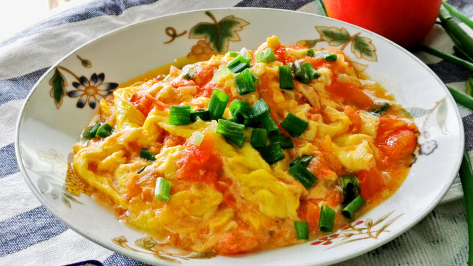

Shrimp Scampi
Origin: Italy
Source: NYT Cooking
Category: Main Dish

Shrimp scampi is a classic Italian-American delight, where succulent shrimp meet a medley of garlic, butter, and white wine. Sautéed to pink perfection, the shrimp mingle with a fragrant blend of garlic and red pepper flakes. A drizzle of white wine and a squeeze of lemon create a luxurious sauce, embracing the dish's linguine base. With a sprinkle of parsley, it's a harmonious, flavorful masterpiece that exemplifies both simplicity and taste.
Recipe Ingredients
- 2 tablespoons butter
- 2 tablespoons extra-virgin olive oil
- 4 garlic cloves, minced
- ½ cup dry white wine or broth
- ¾ teaspoon kosher salt, or to taste
- ⅛ teaspoon crushed red pepper flakes, or to taste
- Freshly ground black pepper
- 1¾ pounds large or extra-large shrimp, shelled
- ⅓ cup chopped parsley
- Freshly squeezed juice of half a lemon
- Cooked pasta or crusty bread
Recipe Steps
- In a large skillet, melt butter with olive oil.
- Add garlic and sauté until fragrant, about 1 minute.
- Add wine or broth, salt, red pepper flakes and plenty of black pepper and bring to a simmer. Let the wine reduce by half, about 2 minutes.
- Add shrimp and sauté until they just turn pink, 2 to 4 minutes depending upon their size.
- Stir in the parsley and lemon juice and serve over pasta or accompanied bycrusty bread.


Chicken Quesadilla Recipe
Origin: Mexico
Source: Well Plated
Category: Main Dish

A plain cheese quesadilla of the white tortilla + prebagged cheese + microwave-until-melted variety can be made a bit of a joke when describing someone’s ability to “cook,” but this juicy chicken quesadilla is well-above basic.
Recipe Ingredients
- Chicken
- Cheese
- Veggies
- Spices
- Hot sauce
- Whole wheat tortilla
- Toppings
Recipe Steps
- Add the chicken to a bowl, then stir in half of the spices.
- Sauté the vegetables with spices.
- Assemble the quesadillas by piling the fillings onto one half of a tortilla.
- Fold the empty tortilla half over the top. Repeat.
- Cook the quesadillas two at a time in a skillet.
- Flip after about 4 minutes, cooking on the other side for a few minutes. Let cool, slice, and DIG IN!


Tomato and Eggs
Origin: China
Source: Alex Ni
Category: Main Dish
Tomato and eggs is a hot dish which originated from China. It is a simple and fast dish to make, but it has good nutritional value. It is a very satisfying food to eat and popularly served with rice and topped with green onions.
Recipe Ingredients
- Tomatoes
- Eggs
- Salt
- Sugar
- Cooking oil
Recipe Steps
- Crack eggs into a bowl and mix until scrambled.
- Cut tomatoes into pieces around the size of your thumb.
- Oil a hot pan and cook the eggs until satisfied then remove the eggs.
- Re-oil the pan and cook the tomatoes until they loosen.
- Combine eggs and tomatoes and season with salt and sugar.